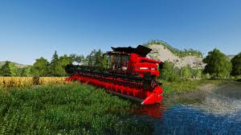
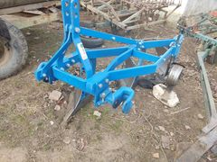
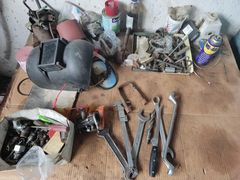
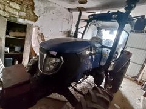
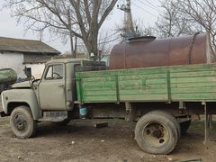
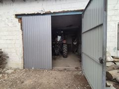
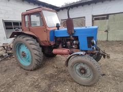
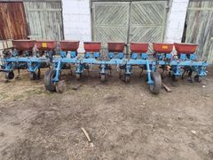
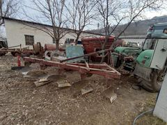
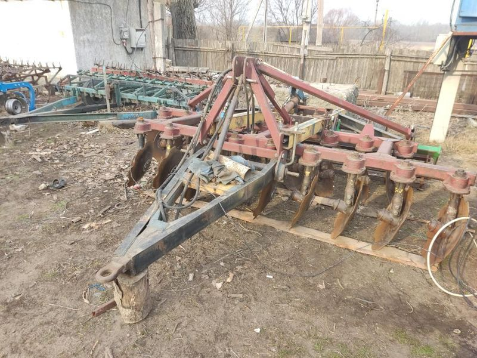

Agricultor de mic


| companie: | ROL: | perioada: | descrierea: |
|---|---|---|---|
| Moșie Stramoșsească | Agricultor | 2017-2018 | În acestă perioadă pe o suprfață de 15he s-au semănat 80% Porumb,și 20% Răsărită. |
| Moșie Stramoșsească | Agricultor | 2018-2019 | Suprafața terenurilor s-a extins pâna la 20he unde au fost semănate 50% Poromb și 50% Floarea-Soarelui. |
| Moșie Stramoșsească | Agricultor | 2019-2020 | Suprafața ajunge la 27he fiind semănate Porumb Floarea-Soarelui si Orz. |
| Moșie Stramoșsească | Agricultor | 2020-2021 | Suprafața ajunge de la 27he la 40he fiind semănate în proporții de 70% Floarea-Soarelui iar restul de 30% Grâu și Porumb. |
| Moșie Stramoșsească | Agricultor | 2021-2022 | Suprafața a ajuns la cota de 50he. |
Despre Noi
Gospodaria țaraneasca a fost fondată de Stanciu Dumitru in anul 2017, la insistențele tatălui sau. Nu și-a imaginat niciodata ca va ajunge agricultor dar soarta ia aratat alt drum fata de cel la care sa asteptat pe bancile facultații. Obiectivele pe uramtorii 5 ani sunt să ajungem la 100 ha și să ajutam locuitorii satului.
Imagini cu tractoare și unelte de lucru folosite de noi în agricultura.








